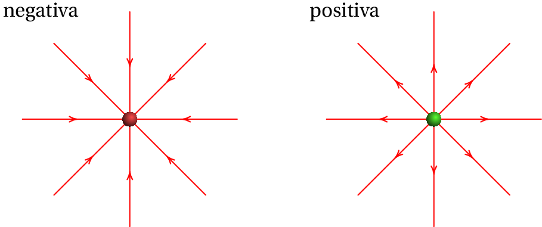
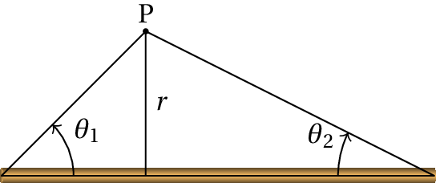

Desde o século 7 a. C. os gregos já conheciam as forças
elétricas que actuam à distância entre objetos eletrizados por
fricção. No
século 18, Stephen Gray
descobriu que a eletrização de um objeto pode ser transferida, como se
fosse um fluido, através de alguns corpos chamados condutores e
que existem dois tipos desse "fluido"
elétrico. Benjamin Franklin,
observando que tanto o objeto eletrizado por fricção como o material
usado para friccionar adquirem cargas da mesma grandeza mas de tipos
opostos, postulou a existência de um único fluido elétrico. Segundo
Franklin, todos os objetos no seu estado natural contêm uma dada
quantidade de fluido elétrico; o friccionamento faz com que parte
desse fluido seja transferido ficando um dos objetos com excesso e o
outro com falta desse fluido.
Não podendo detetar o fluxo de fluido elétrico, Franklin assumiu que
no vidro esfregado com seda o fluido passa da seda para o vidro.
Assim sendo, Franklin chamou carga positiva (excesso de fluido
elétrico) ao estado de eletrização do vidro esfregado com seda
e carga negativa ao estado de eletrização da seda usada para
esfregar esse vidro. Atualmente sabe-se que a matéria é constituída
por átomos e que um átomo ou molécula está no seu estado elétrico
"natural" (neutro), quando tem o mesmo número de eletrões e
de protões. O fluido elétrico postulado por Franklin é realmente a
transferência de eletrões entre átomos ou moléculas. No caso do vidro
eletrizado por fricção com seda, os eletrões passam do vidro para a
seda; ou seja, usando os sinais adotados por Franklin para a carga, o
eletrão é uma partícula com carga elétrica negativa,
1.1. Força e carga elétricas
Toda a matéria é constituída por átomos e cada átomo é formado por
três tipos de partículas fundamentais. O eletrão foi a primeira partícula dessas
partículas a ser descoberta, por J. J.
Thomson em 1897. Os outros dois
tipos de partículas atómicas são os protões e os
neutrões que se
encontram no núcleo atómico com
carga positiva e eletrões à sua volta (ver
figura 1.1). O que distingue os átomos de
diferentes elementos químicos é o número de protões no núcleo, chamado
número
atómico.
Figura 1.1: Átomo de lítio.
Por exemplo, o átomo com 3 protões e 4 neutrões que mostra a
figura 1.1 é um átomo de lítio,
com número atómico igual a 4. Um eletrão isolado é uma
partícula muito pequena, mas dentro do átomo, cada eletrão
assemelha-se de uma "nuvem" espalhada em torno do
núcleo.
Entre dois protões ou dois eletrões atua uma força
repulsiva chamada força
elétrica. A origem dessa força é atribuída a uma
propriedade intrínseca das partículas fundamentais,
chamada carga
elétrica.
A intensidade da força elétrica entre dois protões ou dois
eletrões é exatamente igual, se a distância entre as
partículas for a mesma. Isso implica que a grandeza da carga
elétrica dos protões e dos eletrões é a mesma. Um protão e
um eletrão, colocados à mesma distância que esses dois
protões ou eletrões, também interagem com força elétrica da
mesma intensidade, mas essa força é atrativa, em vez de
repulsiva.
Conclui-se então que existem dois tipos diferentes de carga
elétrica: a carga dos protões e a carga dos eletrões. A
força elétrica entre duas partículas com o mesmo tipo de
carga é repulsiva, enquanto que a força entre partículas com
diferentes tipo de carga é atrativa.
Um átomo neutro (com igual número de protões e de eletrões)
e não polarizado (nuvem eletrónica com centro
no núcleo), não
produz forças elétricas sobre outras partículas com
carga. Assim sendo, é conveniente distinguir os dois tipos
de carga atribuindo-lhes sinais opostos; a convenção adotada
é que a carga dos protões é positiva e a carga dos eletrões
é negativa. Como o valor absoluto das cargas dessas duas
partículas é assim, a carga total dos átomos com igual
número de eletrões e protões é nula, explicando porque não
produzem forças elétricas sobre outras partículas externas.
Quando um átomo neutro perde um eletrão, fica com uma
unidade de carga positiva (ião positivo, com um excesso de
um protão em relação ao número de eletrões) e produz as
mesmas forças que produz um único protão. Quando num átomo
neutro entra mais um eletrão, o átomo passa a ter uma carga
total igual a uma unidade de carga negativa (ião negativo,
com um eletrão a mais em relação ao número de protões),
produzindo as mesmas forças elétricas do que um único
eletrão.
A unidade SI usada para medir carga é o coulomb,
indicado com a letra C. Nessas unidades, a carga de um protão tem o
valor
(1.1)
A carga de um eletrão é também igual a esse mesmo valor,
mas com sinal negativo. Os neutrões não têm carga elétrica
e, como tal, não sofrem nem produzem nenhuma força
elétrica.
A partir da segunda metade do século 20, têm sido
descobertas muitas outras partículas fundamentais, mas todas
essas novas partículas têm cargas elétricas iguais a um
múltiplo inteiro (positivo ou negativo) do valor
da
carga do protão. Diz-se então que existe
quantização da carga. Isto é, qualquer sistema no universo tem sempre uma carga total
que é um múltiplo inteiro da carga elementar:
(ver equação 1.1).
Outra propriedade importante da carga, que tem sido
observada em todas as experiências em que são produzidas ou
aniquiladas partículas fundamentais, é a conservação da
carga: a carga
total inicial é igual à carga total final.
1.2. Eletrização
É necessária uma energia muito elevada para conseguir
remover um protão, ou um neutrão, do núcleo de um
átomo. Isso só ocorre no interior das estrelas, na camada
mais externa da atmosfera onde chocam partículas cósmicas
com muita energia ou nos aceleradores de partículas onde as
energias das partículas são suficientemente elevadas. Para
extrair ou introduzir um eletrão num átomo neutro é
necessária uma energia muito menor.
Sempre que dois objetos diferentes entram em contacto
próximo, há eletrões de um dos objetos que passam para o
outro. O objeto que for mais susceptível de perder eletrões
fica entãoeletrizado com carga positiva (
protões em excesso) e o objeto que tiver menos tendência
para perder os seus eletrões fica com carga da mesma
intensidade, mas negativa (
eletrões em excesso). Por
exemplo, a figura 1.2 mostra uma
barra que perdeu eletrões após ter sido esfregada com um
pano e esses eletrões passaram para o pano.
Figura 1.2: Barra de vidro eletrizada por fricção com um pano de seda.
Os diferentes materiais podem ser ordenados
numa triboelétrica
(tabela 1.1), em que os
materiais no topo da série são mais susceptíveis de ficar
com carga positiva e os materiais no fim da série têm maior
tendência para ficar com carga negativa.
Tabela 1.1: Série triboelétrica.
Pele de animal
Vidro
Cabelo humano
Lã
Chumbo
Seda
Alumínio
Papel
Madeira
Cobre
Prata
Borracha
Acetato
Esferovite
Vinil (PVC)
Quando a barra de vidro da
figura 1.2 é friccionada com
seda, alguns eletrões passam do vidro para a seda, porque o
vidro está acima da seda na tabela triboelétrica. Como os
eletrões transportam carga negativa, o vidro fica com carga
positiva e a seda com carga negativa, com o mesmo valor
absoluto da carga no vidro. Se a mesma barra de vidro fosse
esfregada com uma pele de animal, que está acima do vidro na
série triboelétrica, a passagem de eletrões seria da pele
para o vidro, ficando a barra de vidro com carga negativa e
a pele com carga positiva.
1.3. Lei de Coulomb
Entre as experiências de eletrostática realizadas por
Franklin, conta-se uma na qual introduziu pequenas bolinhas
de cortiça dentro de uma taça metálica que tinha sido
previamente isolada da mesa onde se encontrava e carregada
eletricamente. Franklin observou que as bolinhas de cortiça
não sentem a ação da força elétrica dentro da taça, ao
contrário do que acontece fora dela, onde há forças
elétricas que atraem a cortiça da taça.
Priestley conseguiu explicar esse
fenómeno da forma seguinte: considere-se uma esfera metálica
carregada, como mostra a
figura 1.3, e uma partícula com
carga
colocada num ponto qualquer dentro da esfera. Um
conjunto contínuo de retas que passam pela partícula
interseta a esfera, nos dois lados opostos à partícula,
formando duas regiões com áreas
e
, que são diretamente proporcionais aos
quadrados das distâncias
e
desde P até os dois lados da esfera.
(1.2)
Figura 1.3: Forças no interior de uma esfera carregada.
A mobilidade das cargas no metal e as forças repulsivas entre cargas
do mesmo sinal, faz com que as cargas se distribuam uniformemente na
superfície. Assim sendo, os valores absolutos das cargas nas duas
regiões opostas da esfera,
e
, são
diretamente proporcionais às áreas das duas regiões e a equação
anterior implica:
(1.3)
As duas regiões nos lados opostos de
produzem sobre a
partícula duas forças opostas
e
. Se o módulo da força elétrica
produzida por cada região é proporcional ao valor absoluto
da carga na região, dividida pelo quadrado da distância até
à partícula, então essas duas forças têm o mesmo módulo e
anulam-se.
Qualquer outra região na superfície da esfera tem sempre
uma respetiva região no lado oposto da carga
e as força
resultante dessas duas regiões sobre a carga
também é
nula. Conclui-se então que a força elétrica nula em qualquer
ponto do interior da esfera condutora é consequência de que
a força elétrica produzida por uma partícula com carga
, sobre outra partícula com carga
, é diretamente
proporcional a
e inversamente proporcional ao
quadrado da distância entre as cargas. A lei de ação e
reação também implica que o módulo da força elétrica de
sobre
seja o mesmo, ou seja, a força elétrica
entre as partículas deverá ser também proporcional a
. Resumindo, a expressão do módulo da força entre
duas partículas com cargas
e
é
(1.4)
onde
é a distância entre as cargas e
é uma
constante, chamada constante de Coulomb. Esta expressão da
força elétrica chama-se lei de Coulomb:
A força elétrica entre duas cargas pontuais é diretamente
proporcional ao produto das cargas e inversamente proporcional ao
quadrado da distância entre elas.
A expressão vetorial para a força que a partícula
produz sobre a
partícula
é a seguinte:
(1.5)
O vetor
é a força que a partícula 1 exerce sobre a
partícula 2,
e
são os valores das suas cargas, e
e
são o módulo e o versor do
vetor
, que é a posição da partícula 2 em relação à
partícula 1. Nomeadamente,
é o vetor desde o ponto 1
até o ponto 2, e
é o vetor de módulo unitário, na
direção e sentido do ponto 1 ao ponto 2 (ver figura 1.4).
Figura 1.4: Força entre cargas pontuais do mesmo sinal (esquerda)
e de sinais opostos (direita).
Na equação 1.5,a força
tem a mesma
direção do versor
: linha que passa pelas duas
partículas. O produto
tem sinal positivo se as cargas são
do mesmo sinal, ou negativo se fossem de sinal contrário. Ou seja, se
as cargas têm o mesmo sinal a força
é no mesmo sentido
do versor
(força repulsiva) e se os sinais das cargas
são diferentes, o sentido da força é oposto a
(força
atrativa). O módulo da força é diretamente proporcional aos valores
absolutos das cargas, e inversamente proporcional ao quadrado da
distância entre elas.
A lei de ação e reação implica que a força que a partícula 2 exerce
sobre a partícula 1 é igual e oposta à força que a partícula 1 exerce
sobre a partícula 2. Ou seja,
, mas os
módulos dessas duas forças são iguais:
.
A lei de Coulomb é válida unicamente para um sistema de
duas cargas pontuais, ou seja, duas partículas com
carga concentrada numa região muito pequena do espaço.
A equação vetorial 1.5 é
particularmente útil em três dimensões. Em duas dimensões é
geralmente mais fácil usar a
equação 1.4 para o módulo da
força e desenhar a sua direção e sentido num diagrama que
permita aplicar relações geométricas.
O valor da constante de Coulomb,
no sistema internacional de unidades é
(1.6)
Também pode interpretar-se
como a constante que define
a unidade SI de carga: uma carga de 1 C é uma carga tal
que a força elétrica entre duas cargas de 1 C,
distanciadas de 1 m, é igual a
N.
Exemplo 1.1
Três partículas com cargas de 3 nC, 5 nC e
nC encontram-se nos
vértices de um triângulo equilátero de 4 mm de lado. Determine a força
total sobre a partícula de carga negativa.
Resolução. O primeiro que convém fazer é calcular o
valor da constante eletrostática nas unidades relevantes no
problema:
isto implica que, usando unidades de nC para as cargas, mm
para as distâncias e o valor de 9 para a constante
, as
forças calculadas pela lei de Coulomb serão dadas em mN.
A seguir escolhe-se um sistema de eixos coordenados como se
mostra na figura ao lado. Sobre a partícula de carga
C atuam duas forças elétricas, produzidas pelas
cargas de 3 nC e 5 nC. Os módulos das duas forças
são
As duas forças são atractivas e fazem um ângulo de 30° com a
vertical. Como tal, as componentes da força resultante são
e o módulo da força resultante é
Exemplo 1.2
Quatro cargas pontuais
,
,
e
encontram-se nos vértices de um
tetraedro regular de aresta
cm. Determine a
força resultante sobre a carga
.
Resolução. Os três eixos coordenados podem ser
escolhidos como mostra a figura ao lado, com a carga
na origem, a carga
no eixo dos
e a carga
sobre o plano
. Como tal, as posições dessas três
cargas são
A figura mostra que a coordenada
do vetor
é
a mesma do vetor
, enquanto que a coordenada
é um terço da coordenada de
, já que num
triângulo equilátero as bissetrizes interceptam-se a um
terço da altura do triângulo:
Para calcular a altura
do tetraedro, calcula-se o módulo de
, que deverá ser igual a
; assim sendo,
A posição da partícula 4 relativa a cada uma das outras
três partículas obtém-se subtraindo
menos a
posição da respectiva partícula e os respetivos versores
obtêm-se dividindo por
, já que as arestas do tetraedro
são todas iguais a
:
As 3 forças elétricas sobre a partícula 4 calculam-se a
partir da equação 1.5 e a força
resultante é a soma dessas 3 forças
Como a aresta do tetraedro é dada em centímetros, convém usar
a constante
nas unidades seguintes:
O resultado obtido para a força sobre a partícula 4 é
1.4. Campo elétrico
No exemplo 1.2, se a carga
fosse substituída, por exemplo, por outra carga igual
a força resultante
seria o mesmo
vetor calculado no exemplo, multiplicado por
. Em
geral, quaisquer que sejam as cargas que produzem forças
sobre uma partícula com carga
, colocada num ponto P do
espaço, a força elétrica
produzida sobre essa
partícula é sempre diretamente proporcional ao valor da
carga
. Ou seja,
(1.7)
onde o vetor
chama-se campo elétrico. Um sistema de
várias cargas produzem, em cada ponto do espaço,
um campo elétrico
, que pode ser determinado medindo a força elétrica
que atua sobre uma pequena carga de prova
colocada nesse ponto e
dividindo a força
pelo valor de
.
Figura 1.5: Sistema de
cargas pontuais.
Por exemplo, para calcular o campo elétrico produzido por um sistema
de
cargas pontuais (
, …,
), num ponto P,
calcula-se a força exercida por cada uma dessas
cargas sobre uma
carga de prova
colocada no ponto P, como mostra a
figura 1.5. A resultante dessas forças é:
(1.8)
onde cada vector
vai desde a carga
até a carga
e
e o versor na direção e sentido desse vetor. O campo
obtém-se dividindo pela carga de prova
:
(1.9)
A interpretação física do campo elétrico é que cada carga
altera
o espaço à sua volta (ver figura 1.6) e
essa alteração é o campo elétrico. Essa alteração do espaço pode ser
detetada através da força que outras partículas com carga sentem
quando colocadas nesse espaço.
O conceito de campo elétrico foi adotado pelos físicos do século 19,
para explicar como as forças eletrostáticas e gravitacionais podem
atuar à distância, entre duas partículas que não estão em contacto. O
campo era associado a um meio invisível e imaterial
chamado éter; o campo seria como
uma onda que se propaga no éter produzindo forças em outros corpos.
Figura 1.6: Campo de uma carga pontual.
A teoria do éter foi abolida na física do século 20, mas o conceito do
campo como alteração do espaço prevalece. Existe evidência
experimental de que a ação de uma partícula sobre outra não ocorre
instantaneamente, mas propaga-se desde uma partícula até a outra à
velocidade da luz. Se, por exemplo, neste instante uma grande
quantidade de carga negativa saísse do Sol, ficando este com carga
total positiva, as forças produzidas por essas cargas só seriam
detetadas na Terra
minutos mais tarde, o tempo que o campo
demora a deslocar-se do Sol até a Terra, à velocidade da luz.
Exemplo 1.3
O valor da força sobre uma carga de prova de 5 nC, num determinado
ponto, é igual a
e tem a direção do eixo dos
. Determine o campo elétrico nesse ponto. Qual será a força sobre
um eletrão colocado nesse mesmo ponto?
Resolução. A da força calcula-se o campo elétrico no ponto
A força sobre um eletrão no mesmo ponto será
1.5. Linhas de campo elétrico
O campo elétrico pode ser representado por vetores que indicam a
direção e sentido do vetor
em vários pontos do espaço. Outra
forma de representar o campo é por meio de curvas que seguem a direção
do campo com uma seta a indicar o sentido; em cada ponto de uma
dessas linhas de campo, o campo é o vetor tangente no
sentido indicado pela seta. A figura 1.7 mostra
as linhas de campo produzidas por duas cargas pontuais de 4 nC e 9 nC
colocadas na origem, e no ponto
,
.
Figura 1.7: Linhas de campo elétrico de duas cargas pontuais.
As linhas de campo elétrico têm várias propriedades
Na vizinhança de uma carga pontual positiva há linhas que saem em
todas as direções e na vizinhança de uma carga negativa há linhas que
entram em todas as direções (ver figura 1.8).
Duas linhas de campo nunca se cruzam; num ponto de cruzamento o campo
teria duas direções diferentes, o que não é possível.
Nos pontos isolados, onde não existem cargas pontuais, mas o campo
elétrico é nulo, existem linhas de campo que partem desse ponto e
linhas de campo que se aproximam desse ponto.

Figura 1.8: Campo elétrico de uma carga negativa (esquerda) e de uma
carga positiva (direita).
No exemplo que foi apresentado na figura 1.7, há linhas a sair em
todas direções nos pontos
e (1, 0), onde existem cargas
positivas. Existe um único ponto onde o campo total é nulo, no
segmento entre as duas cargas onde os módulos dos campos das duas
cargas são iguais:
(1.10)
e como a soma das duas distâncias é
,
é igual a 0.4 e
as coordenadas do ponto de campo nulo são (0.4, 0). As duas linhas de
campo ao longo do eixo dos
, no segmento entre
e
,
aproximam-se assimptoticamente desse ponto de campo nulo e existem
outras duas linhas de campo que partem do ponto para os dois
quadrantes onde
é positivo e onde
é negativo.
Outro exemplo são as linhas de campo de um dipolo elétrico,
formado por duas cargas iguais de sinais opostos. As linhas de campo
são apresentadas na figura 1.9.
Figura 1.9: Campo elétrico de um dipolo.
Uma distribuição contínua de cargas pode ser aproximada por uma série
de cargas pontuais. Por exemplo, se existem cargas distribuídas
uniformemente no segmento do eixo dos
entre
e
,
pode-se imaginar um sistema de cargas pontuais, equidistantes, sobre o
segmento entre
e
. A figura 1.10 mostra
as linhas de campo obtidas com 7 cargas pontuais.
Figura 1.10: Campo elétrico de um sistema de 7 cargas pontuais no eixo dos
.
Em qualquer sistema de duas cargas cuja soma não seja zero,
existe um ponto de campo nulo onde terminam e saem linhas de
campo. As linhas de campo elétrico dão também alguma ideia
da grandeza relativa do campo elétrico. O campo é mais forte
onde a densidade de linhas for maior e mais fraco onde as
linhas estiverem mais distanciadas.
1.6. Condutores e Isoladores
Em alguns materiais, como nos metais, o eletrão mais
externo de alguns átomos consegue libertar-se do átomo e
deslocar-se livremente pelo material; existe assim uma
"nuvem" densa de eletrões livres (eletrões
de condução), com densidade constante se o
material for homogéneo. Esse tipo de material é designado de
condutor.
Um material que não seja condutor diz-se
isolador;
dentro de um isolador, as cargas elétricas não se podem deslocar
livremente.
Se um condutor é colocado numa região onde existe campo
elétrico, como a nuvem eletrónica de condução tem carga
negativa, desloca-se no sentido oposto às linhas de campo. O
deslocamento dos eletrões de condução faz surgir carga
negativa num extremo (excesso de eletrões) e carga positiva
no extremo oposto (falta de eletrões). Se a carga total do
condutor é nula, o valor absoluto dessas cargas nos extremos
será igual. Essas cargas de sinais opostos nos extremos
opostos do condutor produzem um campo elétrico interno, no
sentido oposto ao campo externo e quando as cargas
acumuladas nos extremos sejam suficientemente elevadas,
dentro do condutor os dois campos se anulam e o movimento
dos eletrões de condução cessa.
A figura 1.11 mostra uma barra
com carga positiva, colocada na proximidade de uma esfera
condutora montada num suporte isolador; a nuvem eletrónica
de condução na esfera aproxima-se da barra, deixando carga
positiva na região mais afastada da barra e a mesma
quantidade de carga negativa na região mais próxima da
barra. Se o suporte não fosse isolador, entravam no condutor
eletrões do suporte e as cargas positivas indicadas na
figura desapareciam.
Figura 1.11: Condutor num campo elétrico.
Se a barra tivesse carga negativa, em vez de positiva, as
posições das cargas positivas e negativas na esfera seriam
trocadas. Uma vez acumuladas cargas de sinais opostos nos
extremos da esfera, o campo elétrico total dentro da esfera
é nulo; como tal, as linhas de campo não penetram na esfera
e os eletrões de condução dentro da esfera não sentem
qualquer força elétrica. Nos dois casos (barra com carga
positiva ou negativa), as cargas na superfície da esfera
mais próxima da barra são atraídas para a barra e essa
atração é maior do que a repulsão sobre as cargas na
superfície mais afastada da barra. Assim, qualquer objeto
externo com carga de qualquer sinal produz sempre uma força
atrativa nos condutores com carga total nula.
Se a mesma experiência é realizada com uma esfera isoladora
(figura 1.12), não há
acumulação de cargas nos extremos; assim, o campo no
interior da esfera não se anula e todas as moléculas dentro
dela são polarizadas, isto é, a sua
própria nuvem eletrónica desloca-se no seu interior da
molécula, no sentido oposto do campo. No caso apresentado na
figura (barra com carga positiva), a nuvem eletrónica das
moléculas deixa de estar centrada no mesmo ponto das cargas
positivas, passando a estar centrada num ponto mais próximo
da barra; cada átomo torna-se um pequeno dipolo
elétrico, que é um sistema com carga total nula, mas com
as cargas positivas e negativas em
pontos diferentes.
Figura 1.12: Isolador num campo elétrico.
A figura 1.12 mostra também
algumas das moléculas da esfera isoladora, polarizadas
formando dipolos. O lado dos dipolos que está mais próximo
da barra com carga tem sempre carga de sinal oposto ao da
carga na barra. Como consequência, a força resultante em
cada dipolo é atrativa e a sobreposição de todas essas
forças produz uma força resultante atrativa entre a barra e
a esfera. Ou seja, entre um objeto com carga de qualquer
sinal e um material isolador sem carga surge sempre força
elétrica atrativa.
1.7. Distribuições contínuas de carga
Para calcular o campo elétrico num ponto P, com vetor
posição
, produzido por uma carga distribuída
continuamente dentro de uma região do espaço, divide-se essa
região em
sub-regiões, com cargas suficientemente
pequenas para que possam ser consideradas cargas
pontuais. Seja o vetor posição de cada uma dessas regiões
e a carga nessa região
. O vetor
desde a região
até o ponto P é
e o versor na direção e sentido desse vetor é
(ver
figura 1.13).
Figura 1.13: Carga distribuída numa região e pequena sub-região com
carga
.
Substituindo na expressão 1.9 do
campo elétrico devido a um sistema de cargas pontuais,
obtém-se uma expressão aproximada para o campo elétrico:
(1.11)
A aproximação torna-se exata no limite
, de forma a tornar todas as cargas
infinitesimalmente pequenas (
) e a soma
nesse limite define um integral:
(1.12)
onde a região de integração, R, é a região onde existe
carga. O integral será integral de linha, de superfície ou
de volume, conforme a carga esteja distribuída numa curva,
superfície ou volume, respetivamente.
1.7.1. Carga distribuída numa curva
No caso de cargas distribuídas ao longo de um fio
(figura 1.14), a carga
diferencial
no pedaço de fio entre os
pontos nas posições
e
é
diretamente proporcional ao comprimento
desse pedaço de fio:
(1.13)
onde
é uma função que depende da
posição no fio, chamada carga linear, que é igual à carga por
unidade de comprimento do fio.
Figura 1.14: Fio com carga.
A equação vetorial de curva contínua é uma expressão para
em função de um único parâmetro real
, que determina a posição dos
pontos na curva. Cada possível valor do parâmetro
determina a
posição de um ponto da curva e
pode ser, por exemplo, um ângulo,
um comprimento ou um instante de tempo;
é a
variação do vetor
devida a o aumento infinitesimal do
parâmetro
e é sempre tangente à curva. O comprimento infinitesimal
de arco,
, é igual ao módulo do vetor
. O integral em 1.12 é um
integral de linha
ao longo da curva C ao longo do fio:
(1.14)
Trata-se de uma aproximação, porque o fio não é uma curva
mas sim um sólido. A aproximação será mais exata quanto
menor for a secção transversal do fio. Realmente existem
muitos percursos possíveis dentro do fio, sendo necessário
usar um percurso médio para calcular o integral de linha.
Exemplo 1.4
Um anel circular de raio
tem carga total
, distribuída
uniformemente. Determine a expressão do campo elétrico ao longo do
eixo do anel.
Resolução; método 1. A carga linear do anel é
Sejam o eixo dos
o eixo do anel, o eixo dos
no
plano do anel, tal como mostra a figura seguinte:
Em coordenadas polares,
os pontos sobre o anel são os pontos da circunferência com equação
vetorial
com
(o parâmetro
será a
variável de integração). É claro que o comprimento
diferencial de arco na circunferência de raio
é igual
a
resultado este que pode ser obtido também calculando o módulo do vetor
O vetor desde um ponto qualquer do anel até o ponto P é
Os integrais do seno e do cosseno, entre 0 e
são nulos e, como tal, o campo em P é
(1.15)
Ou seja, em qualquer ponto do eixo do anel, o campo
elétrico aponta na direção desse eixo, afastando-se do anel
se a carga
for positiva ou aproximando-se dele se for
negativa.
Resolução; método 2. A figura seguinte mostra os
campos produzidos por dois segmentos infinitesimais do anel,
que se encontram nos lados opostos dum mesmo diâmetro do
anel.
As componentes desses dois campos perpendiculares ao eixo
do anel anulam-se e as componentes paralelas ao anel
somam-se. Assim sendo, as cargas nesses dois segmentos podem
ser colocadas no mesmo lado do anel, produzindo um campo
duas vezes maior que o campo do primeiro segmento e a
projeção desse campo ao longo do eixo do anel é igual à
resultante dos dois campos iniciais.
O mesmo procedimento pode ser feito com todos os segmentos
do anel e, como a componente do campo ao longo do eixo será
a mesma independentemente da posição do segmento no anel,
todas as cargas do anel podem ser concentradas numa única
carga pontual
colocada na posição do lado direito na
figura acima e o campo total será a projeção do campo
produzido por essa carga pontual ao longo do eixo.
O quadrado da distância desde essa carga pontual
até o
ponto P é igual a
e o módulo do campo elétrico
devido a essa carga é:
O módulo do campo do anel obtém-se multiplicando pelo cosseno do
ângulo
, que é igual a
sobre
e a expressão vetorial do campo obtém-se multiplicando por
.
1.7.2. Carga distribuída numa superfície
Quando a carga está distribuída continuamente numa lâmina
fina (ver figura 1.15),
o integral do campo pode ser aproximado por um integral
de superfície. Nesse caso, a carga infinitesimal
numa região da lâmina está relacionada com
a carga superficial,
:
(1.16)
onde
é o elemento diferencial de área da
região. E
é a carga por unidade de
superfície na posição
sobre a lâmina.
Figura 1.15: Distribuição superficial de carga numa região de área
.
Como tal, a expressão 1.12
para o campo conduz a um integral de
superfície sobre
a superfície S da lâmina:
(1.17)
O integral de superfície para o campo é uma aproximação já
que as partículas com carga não podem ocupar uma superfície
sem espessura, mas sim um volume no espaço. A aproximação
será mais exacta quanto menor for a espessura da camada onde
estão as cargas (ver figura 1.15).
O integral é um integral duplo, em ordem aos dois
parâmetros que sejam usados para definir a superfície S
parametricamente. A equação vetorial da uma expressão para o
vetor posição
em função de dois parâmetros
reais
e
. O elemento diferencial de superfície
é igual à área da superfície descrita pelo
vetor
quando
aumenta para
e
aumenta para
.
No próximo capítulo mostra-se como resolver integrais de
superfície, determinando o elemento diferencial de
superfície para a partir da equação vetorial paramétrica. O
estudo neste capítulo limita-se unicamente a os casos de
superfícies planas, em que a expressão de
é
mais simples.
Quando a superfície é plana, definem-se dois dos eixos
cartesianos, por exemplo
e
, sobre a superfície e o
elemento diferencial de área é
; por vezes é mais útil usar coordenas
polares
e
, como no caso do exemplo seguinte.
Exemplo 1.5
Determine a expressão do campo elétrico ao longo do eixo
de um disco plano de raio
e com carga total
,
distribuída uniformemente sobre a sua superfície do disco.
Resolução. Como a carga está distribuída
uniformemente sobre a área do disco,
, a carga
superficial é constante e igual a:
Os pontos do disco definem-se facilmente em coordenadas
polares,
escolhendo os eixos
e
sobre o disco, com origem no centro
deste, tal como mostra a figura seguinte
Em função das coordenadas polares na figura, o disco é
formado pelos pontos com
e
nos intervalos
e
. A área
infinitesimal
é a área da região delimitada
pelos aumentos diferenciais
e
dos dois parâmetros. Como
e
são muito pequenos,
é
aproximadamente um retângulo de lados
e
:
(1.18)
O vetor posição de um ponto P sobre o eixo do disco, a uma
distância
, é
e a posição de um ponto qualquer dentro do disco é
Calculando primeiro os integrais em
, tem-se que
os integrais do seno e o cosseno, entre 0 e
, são
nulos e o integral do termo que não depende de
é
igual a
, logo
A distância
é constante dentro do integral e a primitiva é
O resultado obtido é
(1.19)
A fração
é igual a 1 ou
consoante
for
positiva ou negativa, respetivamente.
1.7.3. Carga distribuída num volume
No caso mais geral, a carga encontra-se distribuída dentro
de um volume. A carga infinitesimal dentro de uma sub-região
com volume infinitesimal é
(1.20)
onde
é a carga volúmica
no ponto na posição
, ou seja, a carga por unidade de volume. A
equação 1.12 conduz a um integral triplo
(1.21)
onde V é a região onde há carga. Esse integral triplo
costuma ser difícil de calcular analiticamente; os casos em
que é possível obter um resultado analítico acontecem quando
existe alguma simetria na forma como a carga está
distribuída no espaço. Nesses casos, existem outros métodos
mais simples de determinar a expressão do campo sem ser
preciso calcular o integral triplo na equação
anterior. Esses métodos serão estudados nos 3 próximos
capítulos. Como tal, neste capítulo não será dado nenhum
exemplo de utilização dessa equação.
Perguntas
(Para conferir a sua resposta, clique nela.)
Coloca-se uma barra com carga positiva próxima de uma
folha de papel com carga nula. A força que a barra exerce
sobre o papel é então:
Atrativa.
Repulsiva.
Nula.
Atrativa
ou repulsiva, conforme a barra seja condutora ou
isoladora.
Atrativa
se o papel estiver seco ou nula se estiver húmido.
O que distingue um condutor elétrico de um isolador é:
Ter
mais eletrões do que protões.
Ter
mais protões do que eletrões.
Ter
mais eletrões do que o isolador.
Ter
moléculas que se deformam mais facilmente.
Ter
algumas partículas com carga livres de se deslocar.
Colocam-se três cargas no eixo dos
:
µC, em
m,
µC, em
,
µC, em
m.
Determine o módulo da força elétrica resultante sobre
.
N
N
0
N
N
Três esferas idênticas e condutoras, isoladas, uma delas com carga
e as outras duas sem carga, colocam-se em contacto, cada uma delas
tocando as outras duas e a seguir separam-se. Qual das seguintes
afirmações é correta?
Todas
as esferas ficam sem carga.
Cada
uma delas fica com carga
.
Duas
delas ficam com carga
e outra com carga
.
Cada
uma delas fica com carga
.
Uma
delas fica com carga
e outra com carga
.
Uma esfera metálica montada num suporte isolador liga-se à terra com
um fio condutor e a seguir aproxima-se uma barra de plástico com carga
positiva. A ligação da esfera à terra é retirada e a seguir afasta-se
a barra de plástico. Com que carga fica a esfera metálica?
Nula.
Positiva.
Negativa.
Diferente
de zero, mas não é possível saber o sinal.
Positiva
num extremo e negativa no extremo oposto.
Problemas
A soma dos valores de duas cargas pontuais
e
é
µC. Quando estão afastadas 3 m entre si, o módulo da
força exercida por cada uma delas sobre a outra é 24 mN. Determine os
valores de
e
, se: (a) Ambas cargas são
positivas. (b) Uma das cargas é positiva e a outra negativa.
O campo elétrico na atmosfera terrestre tem intensidade de
aproximadamente 150 N/C e aponta na direção e sentido do centro da
Terra. Calcule a relação
entre o peso de um eletrão e o módulo da força elétrica oposta
exercida pelo campo elétrico da atmosfera (a massa do eletrão é
kg e admita que a aceleração da gravidade é
m/s2).
Três cargas pontuais estão ligadas por dois fios isoladores de 2.65 cm
cada (ver figura). Calcule a tensão em cada fio.
Um sistema de três cargas pontuais está em equilíbrio (a força
eletrostática resultante sobre cada carga é nula). Se os valores de
duas das cargas são
e
, separadas por uma distância
,
determine o valor e a posição da terceira carga.
Mostre que o campo elétrico sobre o
eixo de um anel com carga distribuída uniformemente é
máximo nos pontos
e
,
onde
é medido desde a superfície do disco. Faça um
gráfico do módulo do campo em função de
.
Determine a força elétrica resultante sobre cada uma das cargas
representadas na figura e o campo elétrico produzido pelas 3 cargas no
ponto P.
A figura mostra algumas linhas de campo
elétrico de um sistema de duas partículas com carga. O
ponto P encontra-se a 4 cm da carga
e a 3 cm da
carga
.
(a) Qual é o sinal das cargas?
(b) Qual é a relação (
) entre elas?
(c) Complete o desenho das linhas de campo.
(d) Se
nC, calcule a
força entre as duas cargas.
Um fio não-condutor no plano
,
forma um círculo de raio
com centro na origem. O fio
tem carga linear não uniforme
,
onde
é o ângulo em coordenadas polares. Calcule o campo elétrico na
origem.
Um núcleo de hélio (também chamado
partícula alfa) é
formado por dois protões e dois neutrões. A força eletrostática entre os
protões é repulsiva e muito forte, pois a distância
entre eles é muito pequena (aproximadamente
m). A estabilidade do núcleo é
devida à existência de uma outra força entre protões e
neutrões, chamada força forte.
Para ter uma ideia da ordem de grandeza da força forte, calcule a força
eletrostática entre os dois protões no núcleo de
hélio.
Usando o resultado do exemplo 1.5 para o campo de
um disco plano, calcule o campo elétrico produzido por
um plano infinito, com carga superficial
constante.
Um disco de 8 cm de raio, tem uma
carga superficial
, onde
é a
distância desde o centro, e
uma constante igual a
4 µC/m4. Calcule a carga total do disco,
e o campo elétrico ao longo do eixo.
Um fio fino tem carga linear uniforme
e forma um arco circular que subtende um
ângulo de 2
, como se indica na
figura. Mostre que o módulo do campo elétrico no ponto O
é dado pela expressão
.
Um fio retilíneo tem uma carga linear
constante. Determine a expressão do campo
elétrico em qualquer ponto P em função da distância ao
fio,
e os ângulos
e
definidos
na figura. Calcule o valor limite do campo quando o fio
for infinito. (Sugestão: defina o eixo
na
direção do fio, com origem em O e o eixo
na
perpendicular que passa por P.)

Respostas
Perguntas:1. A. 2. E. 3. E.
4. D. 5. C.
Problemas
(a) 6 µC, e 4 µC (b) 12 µC, e
µC.
A força eletrostática é
vezes maior que o peso.
A tensão no fio do lado esquerdo é 285 µN e no fio do lado direito 560
µN.
A terceira carga é
, e encontra-se no segmento de recta entre as
outras duas cargas, a uma distância
da carga
.
Com origem na carga
nC, eixo dos
na direção de
nC, e eixo dos
na direção de
nC, as forças são:
mN
mN
mN
O campo em P é:
N/µC
(a) Negativo. (b)
= 16/9. (d) 66 µN.
.
230.4 N.
, perpendicular ao plano.
257 pC.
(
em cm e
em N/C).
O campo do fio infinito é:
.
Pergunta 1, resposta A: Certa
Cada molécula do papel é polarizada, ficando as cargas negativas mais
próximas da barra e, portanto, a repulsão sobre as cargas positivas de
cada molécula será menor do que a atração sobre as cargas negativas.
(clique para continuar)
Pergunta 1, resposta B: Errada
Os núcleos dos átomos do papel (positivos) são repelidos pela carga
positiva da barra, mas também há forças atrativas a atuar nos eletrões
dos átomos.
(clique para continuar)
Pergunta 1, resposta C: Errada
Os núcleos e eletrões dos átomos nas moléculas do papel sentem forças
em sentido oposto, mas a resultante não será nula porque as moléculas
são polarizadas (afastamento de cargas positivas e negativas) pelo
campo da barra.
(clique para continuar)
Pergunta 1, resposta D: Errada
Como o enunciado diz que a barra tem carga, se esta for condutora,
estará isolada. O sentido das linhas de campo da barra só depende do
sinal das cargas nela e não do tipo de material da barra.
(clique para continuar)
Pergunta 1, resposta E: Errada
O papel húmido é melhor condutor que o papel seco, mas tanto nos
condutores como nos isoladores, o sentido da polarização das cargas
dentro de um material neutro é o mesmo (depende apenas do sentido do
campo elétrico externo).
(clique para continuar)
Pergunta 2, resposta A: Errada
Todos os materiais neutros, independentemente de serem condutores ou
isoladores têm igual número de eletrões do que protões. E todos os
materiais carregados terão eletrões ou protões em excesso (depende do
sinal da carga total). O sinal das cargas em excesso não serve para
distinguir condutores de isoladores.
(clique para continuar)
Pergunta 2, resposta B: Errada
Todos os materiais neutros, independentemente de serem condutores ou
isoladores têm igual número de eletrões do que protões. E todos os
materiais carregados terão eletrões ou protões em excesso (depende do
sinal da carga total). O sinal das cargas em excesso não serve para
distinguir condutores de isoladores.
(clique para continuar)
Pergunta 2, resposta C: Errada
O número de eletrões num material tem mais a ver com o número de
átomos e o número atómico de cada um desses átomos. Esse número não
serve como critério para distinguir condutores de isoladores.
(clique para continuar)
Pergunta 2, resposta D: Errada
Num condutor as cargas em excesso distribuem-se na superfície,
mantendo as moléculas imunes ao efeito do campo elétrico. Assim, as
moléculas dentro de um condutor não são polarizadas e não interessa a
facilidade com que elas sejam deformadas.
(clique para continuar)
Pergunta 2, resposta E: Certa
Essa é a caraterística que define um condutor.
(clique para continuar)
Pergunta 3, resposta A: Errada
Há que calcular os módulos das forças entre as cargas
e
e
entre as cargas
e
(usando a lei de Coulomb), e
subtraí-los, porque as duas forças são vetores com a mesma direção,
mas sentidos opostos.
(clique para continuar)
Pergunta 3, resposta B: Errada
Há que calcular os módulos das forças entre as cargas
e
e
entre as cargas
e
(usando a lei de Coulomb), e
subtraí-los, porque as duas forças são vetores com a mesma direção,
mas sentidos opostos.
(clique para continuar)
Pergunta 3, resposta C: Errada
As forças produzidas pelas outras duas cargas têm sentidos opostos,
mas não se anulam porque têm módulos diferentes.
(clique para continuar)
Pergunta 3, resposta D: Errada
Há que calcular os módulos das forças entre as cargas
e
e
entre as cargas
e
(usando a lei de Coulomb), e
subtraí-los, porque as duas forças são vetores com a mesma direção,
mas sentidos opostos.
(clique para continuar)
Pergunta 3, resposta E: Certa
Há que calcular os módulos das forças entre as cargas
e
e
entre as cargas
e
(usando a lei de Coulomb), e
subtraí-los, porque as duas forças são vetores com a mesma direção,
mas sentidos opostos.
(clique para continuar)
Pergunta 4, resposta A: Errada
A carga final não pode ser nula. A conservação da carga implica que a
soma das cargas no fim deve ser igual à carga inicial
.
(clique para continuar)
Pergunta 4, resposta B: Errada
Como a carga total inicial era
, a conservação da carga implica que
a soma das 3 cargas no fim deverá ser igual à carga inicial
.
(clique para continuar)
Pergunta 4, resposta C: Errada
Se assim fosse, a carga final seria
, que não é igual
à carga total inicial,
.
(clique para continuar)
Pergunta 4, resposta D: Certa
A soma das 3 cargas deverá ser igual à carga inicial. As 3 esferas em
contacto atuam como um único condutor, em que a carga total
distribui-se pela sua superfície. Como as esferas são iguais, por
simetria, na superfície de cada uma fica a mesma carga. No capítulo 7
demonstra-se que se as esferas tivessem raios diferentes, as cargas
nelas não seriam iguais.
(clique para continuar)
Pergunta 4, resposta E: Errada
A carga total final não pode ser 0, porque a conservação da carga
implica que deverá ser igual à carga inicial
.
(clique para continuar)
Pergunta 5, resposta A: Errada
Quando a barra é aproximada ao condutor, são transferidas cargas
negativas da terra para o condutor. A eliminação da ligação à terra
faz com que essas cargas fiquem no condutor, sem poderem regressar
para a terra.
(clique para continuar)
Pergunta 5, resposta B: Errada
Como no fim o condutor está isolado, as cargas que tiver já deveriam
estar lá quando o condutor estava ligado à terra. Se no condutor
ligado à terra houver cargas positivas, a força repulsiva produzida
nelas pela barra afastá-las-ia para a terra, fora do condutor.
(clique para continuar)
Pergunta 5, resposta C: Certa
Quando a barra é aproximada ao condutor, transfere-se carga negativa
da terra para o condutor (e a terra adquire cargas positivas). Quando
se afasta a barra, essas cargas não podem recombinar-se novamente,
porque nesse momento já não há ligação à terra e, como tal, não podem
haver passagem de cargas entre a terra e o condutor.
(clique para continuar)
Pergunta 5, resposta D: Errada
Quando a barra é aproximada ao condutor, são transferidas cargas
negativas da terra para o condutor. Se a carga da barra fosse
negativa, seriam transferidas cargas positivas para o condutor.
(clique para continuar)
Pergunta 5, resposta E: Errada
No fim a barra já foi afastada, assim que qualquer carga que houver no
condutor, independentemente do sinal, será distribuída por toda a sua
superfície.


Cada molécula do papel é polarizada, ficando as cargas negativas mais próximas da barra e, portanto, a repulsão sobre as cargas positivas de cada molécula será menor do que a atração sobre as cargas negativas.
(clique para continuar)